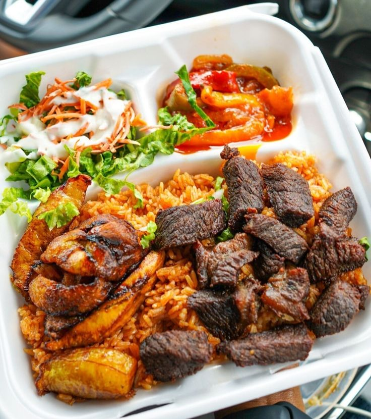
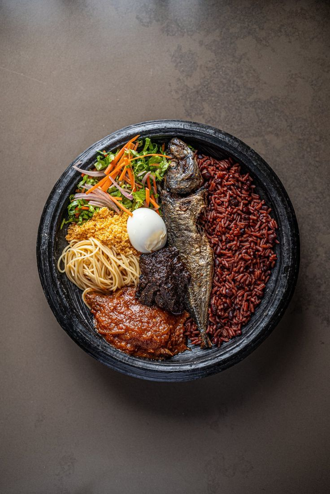
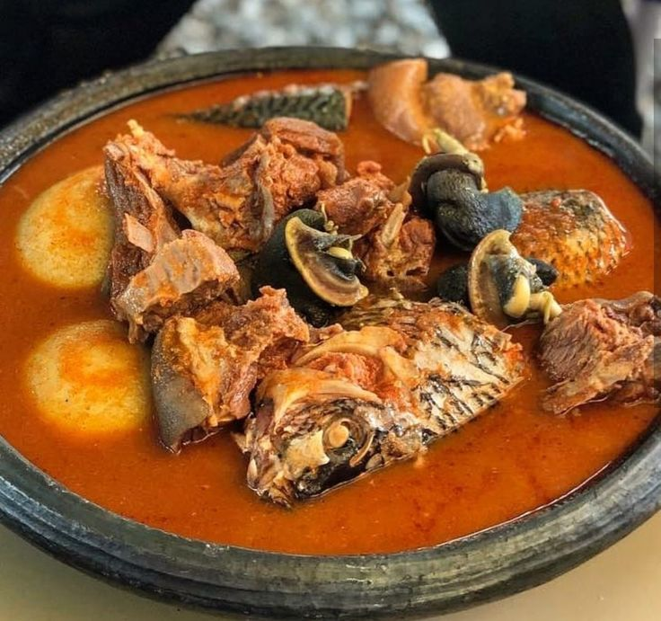
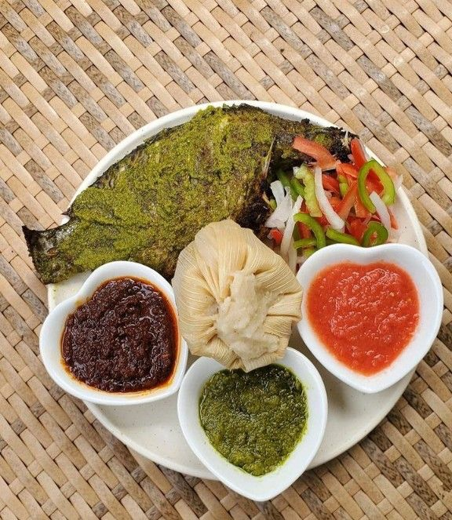
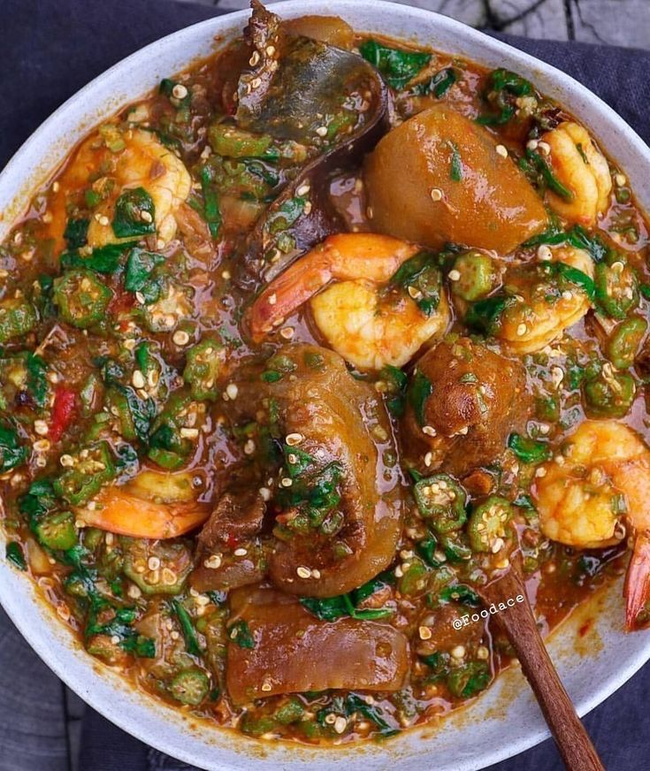

Rice favorite
Ghana Jollof
GH₵ 85Smoky tomato rice served with grilled chicken, beef, and plantain.
Find the smoky jollof, comforting stews, and generous plates you love. Prices are sample amounts in Ghana cedis.

Filter our sample selection by the dishes and flavors you’re craving.

Smoky tomato rice served with grilled chicken, beef, and plantain.
Rice and beans with fish, egg, spaghetti, shito, and fresh sides.

Soft banku and fish with hot pepper, onions, and fresh cucumber.

A warming, peppery broth with fish and traditional accompaniments.

Fermented corn kenkey with grilled fish, savory sauces, and fresh accompaniments.

Rich okra stew with seafood and a generous blend of spices.

Well-seasoned beans and garri with fried ripe plantain.

An abundant mix of grilled meats, spicy sides, and fresh greens.